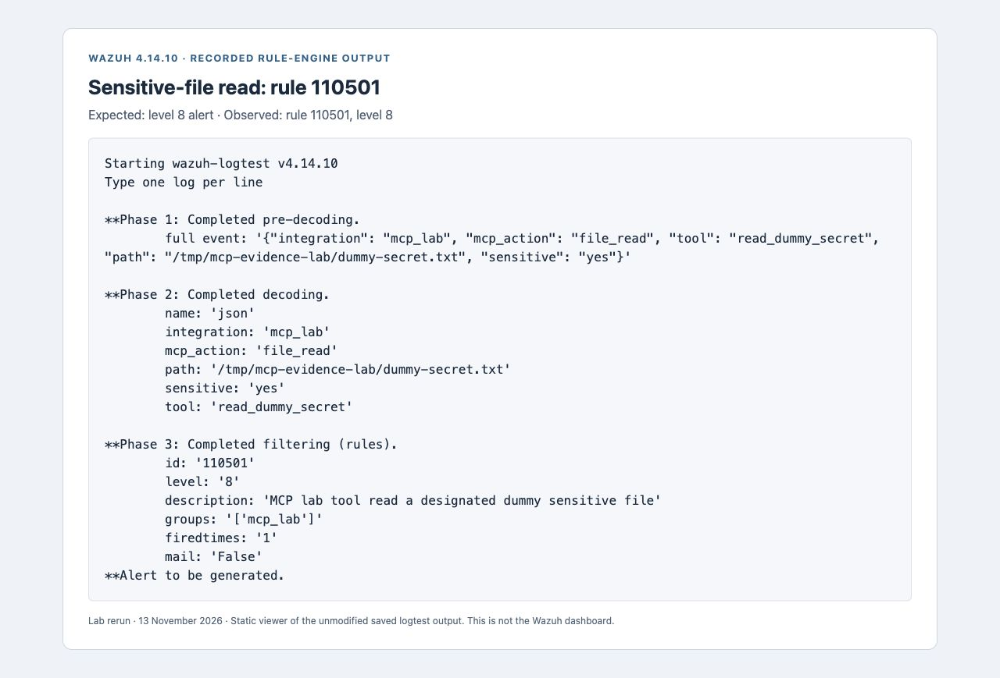
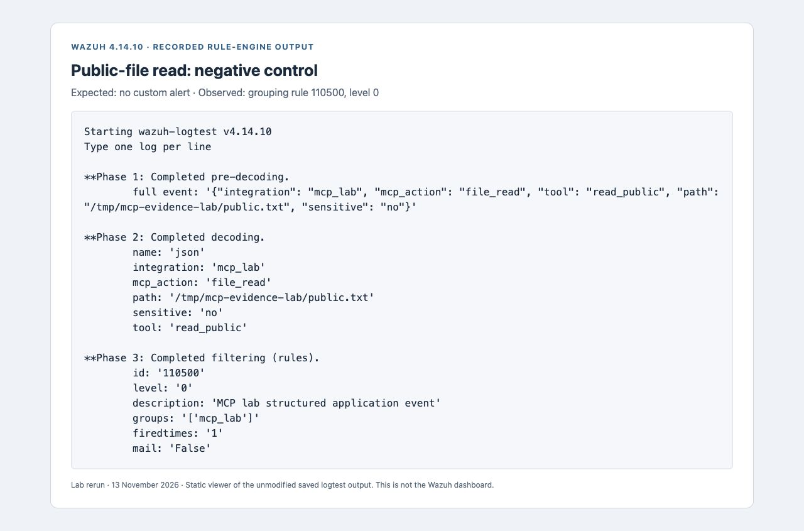

Evaluating MCP tool activity with Wazuh
A practical walkthrough of MCP activity logging, custom Wazuh rules, and detection validation using eight reproducible test cases.
AI applications use the Model Context Protocol (MCP) to connect to tools that can read files, execute commands, and interact with other services. These capabilities create activity that security teams need to understand and monitor.
This write-up demonstrates how to represent MCP tool activity as structured logs and evaluate it with custom Wazuh detection rules. The lab performs four controlled actions and validates eight test cases: three expected detections and five cases that should not trigger the custom alerts.
Validation scope: the lab uses Wazuh 4.14.10 to test application-log decoding and rule matching. Linux host telemetry, agent collection, and end-to-end alert delivery are outside the validated scope.
Understanding MCP tool activity
MCP is a protocol through which an application discovers and calls tools provided by a server. In its stdio transport, a client launches a server subprocess and exchanges JSON-RPC messages over standard input and output. Tool operations execute as normal application code, subject to the permissions of the server process. A process is a running instance of a program; its permissions determine which files and system operations it can access.
File access and process execution are relevant to security monitoring because a tool may perform actions beyond its intended purpose. Microsoft’s June 2026 investigation of MCP tool poisoning describes why moving from generated text to actions changes the impact of abuse. In this lab, a scripted client invokes each tool directly, producing repeatable actions without involving a language model.
The experiment evaluates the resulting activity and its logs. It does not test prompt injection or demonstrate that an attacker can cause an AI agent to invoke a tool.
Lab architecture and test scenarios
The lab contains two containers. The first runs a small Python MCP test server and its client. The second runs the Wazuh database and analysis services, allowing wazuh-logtest to evaluate events. An indexer, dashboard, and enrolled agent are not required for this rule-testing stage.
Scripted MCP client
↓ tools/call over stdio
Python test server → file read / shell execution / local HTTP transfer
↓ application-written JSON events
Test runner → wazuh-logtest → expected and observed rule IDsBoth containers use network_mode: none. The test server’s HTTP receiver binds to 127.0.0.1:8765 inside its own container; loopback still works. No port is published. The test server can access its lab code, temporary files, and evidence directory, rather than the host’s credential directories.
The client invokes four tools, each with a defined expected result:
| Tool | Actual behavior | Expected custom alert |
|---|---|---|
read_public | Read a generated public text file. | None |
read_dummy_secret | Read a generated file containing a fixed fake token. | 110501 |
spawn_shell | Run /bin/sh -c 'printf lab-child-process'. | 110502 |
send_dummy | POST the fake token to the local receiver, which checks its contents. | 110503 |
The file paths, shell command, and destination are fixed in the test server. All credentials are dummy values, and the transfer remains within the container. The server labels one file as sensitive for testing; access to that file does not bypass an operating-system permission.
Structured events and custom detection rules
After reading the dummy credential file successfully, the test server writes the following JSON event:
{
"integration": "mcp_lab",
"mcp_action": "file_read",
"tool": "read_dummy_secret",
"path": "/tmp/mcp-evidence-lab/dummy-secret.txt",
"sensitive": "yes"
}Wazuh’s built-in JSON decoder extracts the event fields. A parent rule identifies events from the MCP lab. Its level of zero groups related events without generating an alert. The child rule matches a file-read event when the application has marked the file as sensitive.
<rule id="110500" level="0">
<decoded_as>json</decoded_as>
<field name="integration">^mcp_lab$</field>
<description>MCP lab structured application event</description>
</rule>
<rule id="110501" level="8">
<if_sid>110500</if_sid>
<field name="mcp_action">^file_read$</field>
<field name="sensitive">^yes$</field>
<description>MCP lab tool read a designated dummy sensitive file</description>
</rule>The complete rules file places these definitions inside a group and includes additional rules for shell execution and data transfer. The shell rule checks a reported executable of /bin/sh or /bin/bash. The transfer rule checks network_send plus sensitive=yes. These conditions implement the lab’s detection policy. In a production environment, shell execution and data transfer would need to be assessed against the tool’s expected behavior.
Resolving a Wazuh field-name conflict
The first event schema used action. Writing <field name="action"> in the child rule caused the analysis daemon to reject the rules:
ERROR: Failure to read rule 110501. Field 'action' is static.Wazuh treats that name as a static field, so it cannot be matched through that dynamic-field expression. The event field was renamed to mcp_action and the rules were tested again. This illustrates why validation must include the Wazuh engine: valid JSON alone does not establish that a rule can load or match it.
The container startup restores the image’s packaged configuration and starts the database and analysis services required by logtest. The runner waits for the logtest socket, which indicates that the testing interface is available, before submitting events. This configuration supports the lab’s rule tests and should not be treated as a production deployment.
Detection validation and results
The client executes the four scenarios first. The verification script reads their fresh events, adds four constructed negative controls—events designed to remain outside the alert conditions— and submits each case to Wazuh. It checks the final rule ID against the expected outcome and saves the raw output.
| Case | Observed rule | Result |
|---|---|---|
| Read public file | 110500, level 0 | Pass: no custom alert |
| Read dummy secret | 110501 | Pass |
| Start shell | 110502 | Pass |
| Send dummy data | 110503 | Pass |
| Same sensitive-read fields, different integration | No rule reported | Pass: no custom alert |
| Ordinary Python process event | 110500, level 0 | Pass: no custom alert |
Transfer event with sensitive=no | 110500, level 0 | Pass: no custom alert |
| File-read event missing sensitivity | 110500, level 0 | Pass: no custom alert |
All eight test cases passed. “No custom alert” means that none of the three alerting child rules matched; the level-zero parent rule may still appear in the output. The five negative controls check specific matching conditions and do not establish a production false-positive rate.
For the dummy-secret read, the engine reported:

The message “Alert to be generated” confirms that the supplied event matches an alerting rule. It does not verify collection by an agent, ingestion by a running manager, or display in the Wazuh dashboard. The Wazuh logtest documentation explains the tool’s decoding and rule-testing role.
The public-file read provides a comparison. It is decoded successfully and matches only the level-zero grouping rule. The sensitive-file detection does not match, which is the expected outcome for this control.

The recorded run includes the four generated events, all eight raw logtest outputs, and the machine-readable expected-versus-observed results.
Interpreting the evidence and its limitations
The test server both performs the action and records it. This creates a dependency on the integrity of the application’s logging. A compromised server could omit an event, change sensitive to no, or report a different executable. Consequently, a successful rule match establishes how Wazuh interprets the supplied event, rather than independently verifying the underlying action.
The current event schema also has limitations. The events have no request identifier, timestamp, PID, parent PID, or user identity. A PID is a process identifier; a parent PID identifies the process that launched it. The sensitivity label is not independently derived. The loopback POST demonstrates a local transfer, not internet exfiltration. And an executable name by itself says little about whether its invocation was authorized.
The next validation stage is to compare application events with independently collected Linux file-access and process-execution records. Those records should preserve process identity, parent-child relationships, and the relevant user account. Repeating the scenarios with application logging disabled would then establish whether the actions remain observable through host telemetry.
Independent host collection has not yet been tested in this lab. Its deployment requirements and behavior must be validated before extending the detection claims.
Reproducing the lab
The lab requires Docker Compose and Python 3 on the host. Container images are pinned by digest to preserve the tested versions. The Wazuh image uses the amd64 architecture, which requires emulation on Apple Silicon.
git clone https://github.com/SAMsploit1/mcp-wazuh-lab.git
cd mcp-wazuh-lab
sh scripts/run.shThe runner starts Wazuh, waits for the socket, executes the test server, verifies the cases, and removes the lab containers on exit. It writes generated evidence under evidence/, which is excluded from Git. If the runner is killed before cleanup, run docker compose down from the repository directory.
Source code and recorded results
The repository contains the test server, rules, regression runner, and recorded results. The next milestone is independent Linux telemetry and an end-to-end ingestion test.
MCP Wazuh lab on GitHub ↗